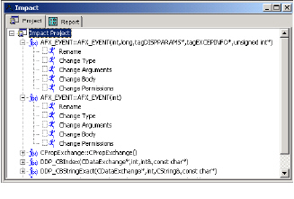
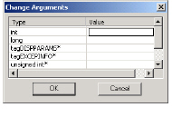
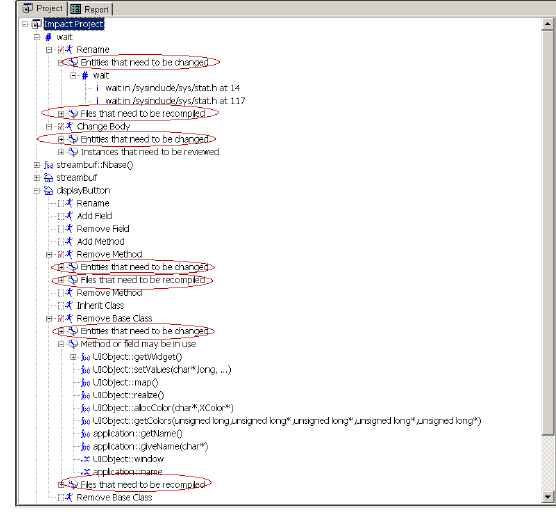

To perform an Impact Analysis
1 In the Model Browser Results window, select the entities you might want to change.
2 Do either of the following:
• Select Tools > Reengineer > Impact.
• Click .
An Impact window appears, illustrating the available change types for the selected entities in a schematic diagram.
3 Expand the list of available changes to see the change types by name.

4 To propose a change, select the desired change type.
A dialog box appears for the specific change you want to make. For more information on the available change types, see Impact Analysis Options.
5 Complete the dialog box with your proposed change information. For example, if you select the Change Arguments change type, the Change Arguments dialog box appears listing the current argument types and values where you replace existing argument types and values, or add others.

6 Click OK.
The updated Impact Analysis diagram reflects the proposed change with a check mark in the proposed change type’s check box, and branch folders underneath the change type indicate Entities that need to be changed and Files that need to be recompiled.
7 To examine the affected entities and files, expand each branch folder.

Important: Impact Analysis only displays proposed and available changes, and does not initiate the changes you make. To make changes to your source code, use TPM Change or your IDE.
8 To propose more changes to your source code, repeat this procedure for each entity in your impact diagram.
Once you have explored your options, you can print a complete report of your proposed changes. For more information, see The Impact Analysis Report.
Note: If you make an error when proposing a change for a specific change type, you can clear your modifications. Make sure you are in the Impact diagram view, and then select the check box to reopen the change type option dialog box for the change type you want to correct.